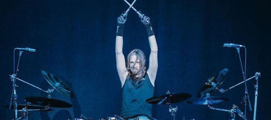

Dave Mustaine
David «Dave» Scott Mustaine es un músico estadounidense, conocido por ser el fundador, guitarrista, vocalista y principal compositor de la banda de thrash metal Megadeth, así como por ser anteriormente guitarrista de la banda Metallica.
Kiko Loureiro
Pedro Henrique «Kiko» Loureiro es un guitarrista brasileño, exmiembro de la banda de Power Metal progresivo Angra y actualmente miembro de Megadeth. En sus inicios hizo parte de las bandas "Legalize", "Kentucky" y "A Chave", entre otras.
Dirk Verbeuren
Dirk Verbeuren es un baterista nacido en Wilrijk, Bélgica en 1975. Es muy notable por pertenecer a la banda sueca de death metal melódico Soilwork, a la francesa Scarve, y actualmente a la de thrash metal estadounidense Megadeth.
James LoMenzo
James "JLo" LoMenzo es un músico estadounidense, conocido por haber sido el bajista de White Lion y de Megadeth, hasta el 8 de febrero de 2010, volviendo nuevamente en 2021 para una gira pendiente luego de la expulsión de David Ellefson.